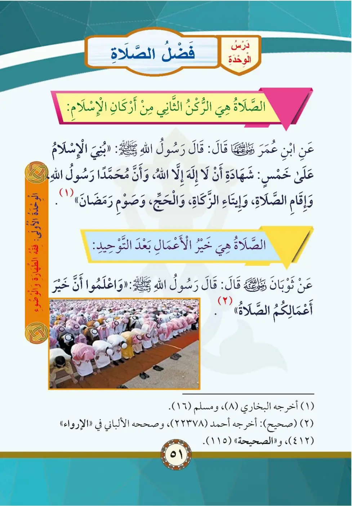
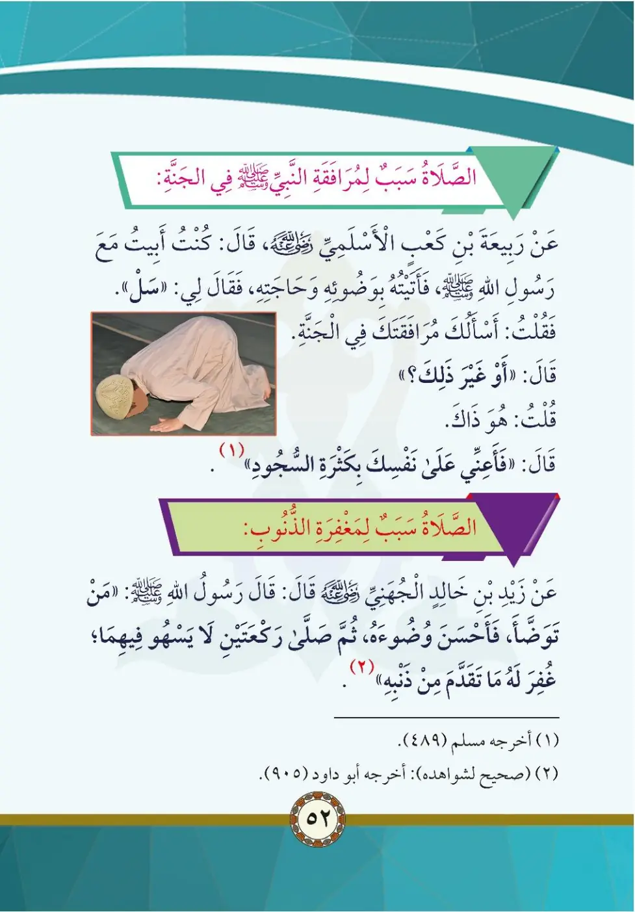

Stage 2·المرحلة الثانية💧 Unit 2
فَضْلُ الصَّلاةِ The Virtue of Prayer
From the Textbookpp. 52–53


الصَّلَاةُ هِيَ الرُّكْنُ الثَّانِي مِنْ أَرْكَانِ الْإِسْلَامِ، وَهِيَ خَيْرُ الْأَعْمَالِ بَعْدَ التَّوْحِيدِ.
As-salatu hiya ar-ruknu ath-thani min arkani al-islam.
Salah is the second pillar of Islam, and it is the best of deeds after tawheed.
தொழுகை இஸ்லாத்தின் இரண்டாவது அடிப்படை; தௌஹீதுக்குப் பின் சிறந்த அமல்.
عَنِ ابْنِ عُمَرَ قَالَ: قَالَ رَسُولُ اللَّهِ صلى الله عليه وسلم: «بُنِيَ الْإِسْلَامُ عَلَى خَمْسٍ: شَهَادَةِ أَنْ لَا إِلَٰهَ إِلَّا اللَّهُ وَأَنَّ مُحَمَّدًا رَسُولُ اللَّهِ، وَإِقَامِ الصَّلَاةِ، وَإِيتَاءِ الزَّكَاةِ، وَالْحَجِّ، وَصَوْمِ رَمَضَانَ». أَخْرَجَهُ الْبُخَارِيُّ (٨)، وَمُسْلِمٌ (١٦)
Buniya al-islamu 'ala khams: shahadati an la ilaha illa Allah...
Ibn Umar reported that the Messenger of Allah said: "Islam is built upon five: testifying that there is no god but Allah and that Muhammad is the Messenger of Allah, establishing prayer, giving zakah, Hajj, and fasting Ramadan." (Bukhari 8, Muslim 16)
இஸ்லாம் ஐந்தின் மீது கட்டப்பட்டது (புகாரி 8, முஸ்லிம் 16)
الصَّلَاةُ خَيْرُ الْأَعْمَالِ بَعْدَ التَّوْحِيدِ؛ قَالَ رَسُولُ اللَّهِ صلى الله عليه وسلم: «وَاعْلَمُوا أَنَّ خَيْرَ أَعْمَالِكُمُ الصَّلَاةُ». أَخْرَجَهُ أَحْمَدُ، وَصَحَّحَهُ الْأَلْبَانِيُّ
Wa-i'lamu anna khayra a'malikum as-salah.
Prayer is the best deed after tawheed; the Messenger of Allah said: "Know that the best of your deeds is prayer." (Ahmad, authenticated by Al-Albani)
"உங்கள் அமல்களில் சிறந்தது தொழுகை" (அஹ்மத்)
عَنْ كَعْبِ بْنِ عُجْرَةَ الْأَسْلَمِيِّ قَالَ: كُنْتُ أَبِيتُ عَلَى رَسُولِ اللَّهِ صلى الله عليه وسلم فَأَتَيْتُهُ بِوَضُوئِهِ وَحَاجَتِهِ، فَقَالَ لِي: «اسْأَلْكَ فِي الْجَنَّةِ». فَقُلْتُ: أَوْ غَيْرَ ذَلِكَ؟ قُلْتُ: هُوَ ذَلِكَ. قَالَ: «فَأَعِنِّي عَلَى نَفْسِكَ بِكَثْرَةِ السُّجُودِ». أَخْرَجَهُ مُسْلِمٌ (٤٨٩)
Fa-a'inni 'ala nafsika bikathrati as-sujud.
Ka'b ibn Ujrah said: I used to serve the Prophet at night, bringing him water for wudu and his needs. He said to me: "Ask me (for anything)." I said: Paradise. He said: "Help me for yourself with much prostration." (Muslim 489)
"நிறைய சுஜூத் செய்வதன் மூலம் எனக்கு உதவி செய்" (முஸ்லிம் 489)
وَعَنْ زَيْدِ بْنِ خَالِدٍ الْجُهَنِيِّ قَالَ: قَالَ رَسُولُ اللَّهِ صلى الله عليه وسلم: «مَنْ تَوَضَّأَ فَأَحْسَنَ الْوُضُوءَ ثُمَّ صَلَّى رَكْعَتَيْنِ لَا يَسْهُو فِيهِمَا؛ غُفِرَ لَهُ مَا تَقَدَّمَ مِنْ ذَنْبِهِ». أَخْرَجَهُ أَبُو دَاوُدَ
Man tawadda fa-ahsana al-wudua thumma salla rak'atayn...
Zayd ibn Khalid al-Juhani reported that the Messenger of Allah said: "Whoever performs wudu well and prays two rak'ahs without being heedless in them, his previous sins are forgiven." (Abu Dawud)
நல்ல உடூ செய்து கவனமாக இரு ரக்அத் தொழுவோரின் பாவங்கள் மன்னிக்கப்படும் (அபூதாவூத்)